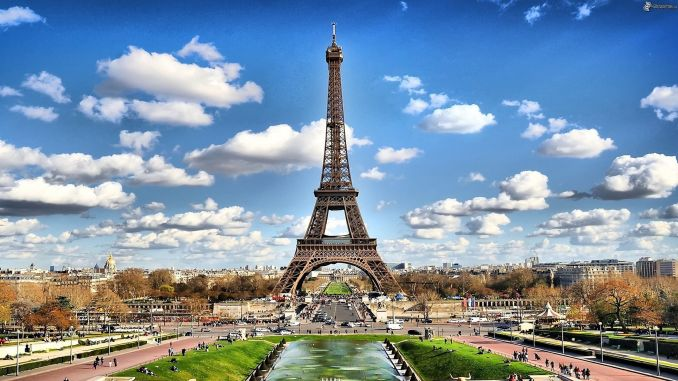

 Paris
Paris là thủ đô của nước Pháp, cũng là một trong ba thành phố phát triển kinh tế nhanh nhất thế giới cùng Luân Đôn và New York và cũng là một trung tâm hành chính của vùng Île-de-France. Nằm ở phía bắc nước Pháp, khu vực trung tâm của châu Âu, Paris được xây dựng hai bên bờ sông Seine với tâm là đảo Île de la Cité. Đây cũng là nơi hợp lưu của sông Seine và sông Marne. Paris nằm ở điểm gặp nhau của các hành trình thương mại đường bộ và đường sông, và là trung tâm của một vùng nông nghiệp giàu có. Vào thế kỷ 10, Paris đã là một trong những thành phố chính của Pháp cùng các cung điện hoàng gia, các tu viện và nhà thờ. Từ thế kỷ 12, Paris trở thành một trong những trung tâm của châu Âu về giáo dục và nghệ thuật. Thế kỷ 14, Paris là thành phố quan trọng bậc nhất của Cơ Đốc giáo và trong các thế kỷ 16, 17, đây là nơi diễn ra Cách mạng Pháp cùng nhiều sự kiện lịch sử quan trọng của Pháp và châu Âu. Đến thế kỷ 19 và 20, thành phố trở thành một trong những trung tâm văn hóa của thế giới, thủ đô của nghệ thuật và giải trí.